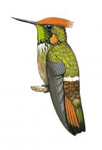
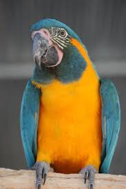
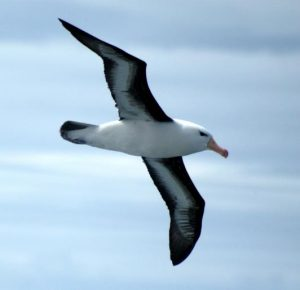
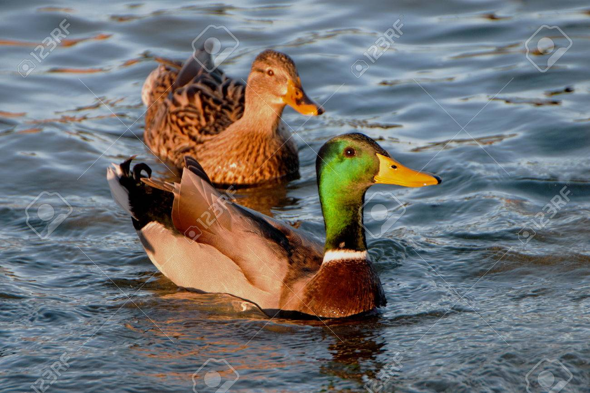
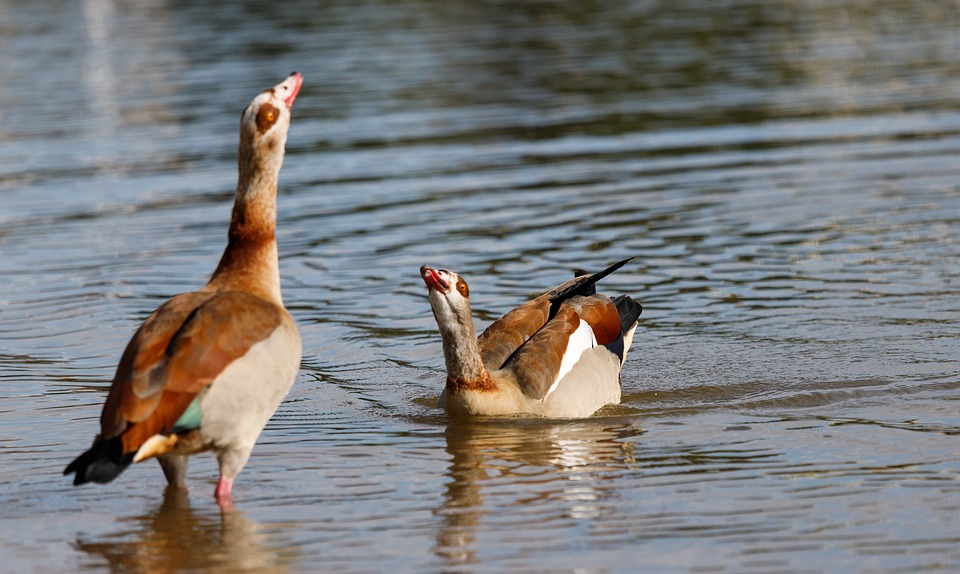
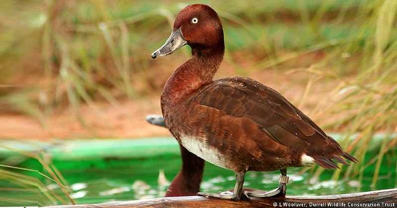
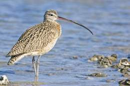

|  | COQUETA |
 | GUACAMAYO |
 | ALBATROS DE LA |
|  | Patos salvajes |
 | Patos de río |
||
| PORRON MALGACHE | ZARAPITO FINO |
|  |  |
| Aves en Peligro | |
De las 10.000 especies de aves que hay en el mundo, casi 1.200 están en peligro de extinción. En los últimos dos siglos, un centenar de especies aladas ha desparecido. Los expertos afirman que la cifra puede caer en picado y estiman que, en este siglo, 500 especies pueden perderse. |
|